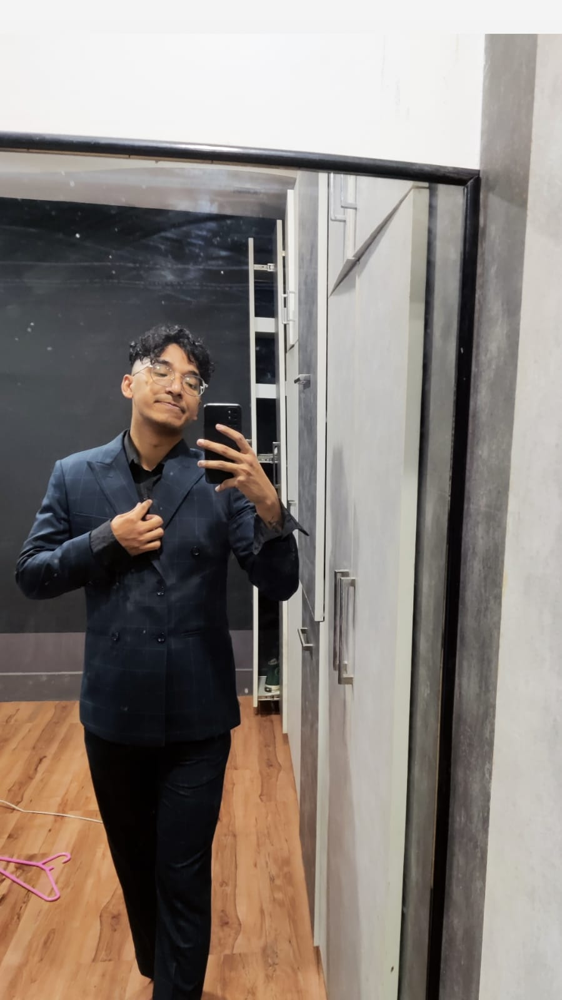

Hi, I'm Aryan
Cybersecurity Professional
Certified cybersecurity and network systems professional with expertise in secure data handling, incident response, and AI data workflows.
Contact MeAbout Me
My IntroductionI’m passionate about cybersecurity, network defense, and AI data workflows. I hold multiple certifications and have worked across research, compliance, and AI data annotation projects.
Professional Summary
Certified cybersecurity and network systems professional with expertise in secure data handling, incident response, and AI data workflows. Skilled in securing infrastructure, validating data integrity, and applying frameworks like NIST, MITRE ATT&CK, and OWASP. Proficient in Python, Django, and technical documentation. Strong collaborator with cross-functional teams ensuring compliance and scalable enterprise IT solutions.
Certifications
- CompTIA Security+ ce
- CompTIA Network+ ce
- Certified in Cybersecurity (CC) – ISC2
- APIsec Certified Practitioner – APIsec University
- Certified AppSec Practitioner (CAP) – The SecOps Group
- Certified Network Security Practitioner (CNSP) – The SecOps Group
Technical Skills
- Cybersecurity: Security Operations, Incident Response, Threat Intelligence, OWASP Top 10, MITRE ATT&CK, NIST Framework
- AI Data Tasks: Data Annotation, Labeling, Validation, Secure Handling, QA, Content Moderation
- Networking: TCP/IP, DNS, VPN, Firewalls, Routing & Switching, Protocol Analysis
- Tools: Kali Linux, Splunk, Wireshark, Burp Suite, Nessus
- Programming: Python, Bash, Django (basic), API Security, Secure Coding
- Operating Systems: Windows, Linux (Ubuntu/Kali), System Hardening
- Documentation: Technical Writing, SOPs, Reports, Threat Models, Blog Posts
- Soft Skills: Communication, Attention to Detail, Time Management, Team Collaboration
Experience
Security Research Analyst – SecurityPal (Apr 2025 – Present)
Maintained AI-powered knowledge library, ensuring accuracy and compliance validation.
AI Data Specialist – CloudFactory (Apr 2024 – Feb 2025)
Annotated and validated 10,000+ data points for AI/ML training with 98% accuracy.
Security Research Analyst Trainee – Code Rush (Feb 2025 – May 2025)
Conducted research on GRC frameworks (NIST, ISO 27001, ISO 42001) and developed reports.
Intern (Network & Security) – Classic Tech (May 2023 – Aug 2023)
Boosted incident response efficiency by 30% through enhanced threat detection and automation.
Administrator – Boutique Heritage Home (Feb 2019 – Mar 2020)
Managed guest services and hotel systems, improving feedback by 15%.
Projects
CK-12 Flexi: STEM Content Structuring
Structured 1,500+ STEM questions, validated accuracy, and reduced flagged errors by 30%.
CBSE-Based Academic Content Validation
Reviewed 2,000+ academic questions across Science, Math, and English ensuring 100% curriculum alignment.
Education
B.Sc. in Information Technology – Lord Buddha Education Foundation (2021 – 2024), affiliated with Asia Pacific University (Malaysia)
+2 in Science – Liverpool College (2017 – 2019), Computer Science stream
S.E.E. – South Point Boarding High School (2016)
Volunteer Experience
Pentester Nepal (Aug 2025) – Assisted with cybersecurity conference operations for 300+ attendees, gaining event management and networking experience.